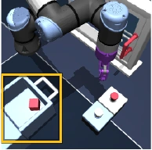
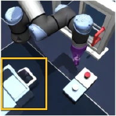
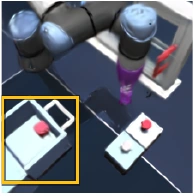

SplatWAM
换个角度看，抽屉里的方块还在吗？
这篇论文最有价值的设计，是把“机械臂动了以后，场景会怎样”与“从哪里看这个场景”拆成两次计算。模型先预测一组新的三维高斯，随后各台相机都从这组高斯成像。给定同一段动作，可以在预测完成后再绕到侧面观察。在 OGBench 仿真的新视角测试中，它的帧率约为 Cosmos3-Edge 加三维重建方案的 12 倍，也让模型在抽屉关上再打开时更常保住方块。对要把方块推多远这样的定量问题，它仍会明显低估动作效果。表 2、表 B2
一个场景怎样装进 2,048 个高斯
把一个三维高斯想成有中心、有朝向、可半透明的椭球。中心决定它在哪里，三个尺度和旋转决定它沿哪个方向铺开，颜色与不透明度决定它对画面有多大贡献。给定相机，光栅化器把各个椭球投影到图像平面，按深度与透明度合成像素。抽屉边缘和方块通常各由多个椭球共同表示。这个状态没有专门叫作“方块”的变量，也没有摩擦系数或接触力。§3，式 1
编码器 SplatWAM-T 接收同一时刻的多张 RGB 照片，输入可不附各相机位姿。它沿用 C3G 的固定预算设计，用经微调的 VGGT 提取图像块特征，再让 2,048 个可学习查询与这些特征交换信息。每个查询输出一个高斯，所有高斯都写在以第一张输入照片为锚点的坐标系里。增加输入照片能补充被挡住的细节，传给动力学模型的序列长度仍固定。换视角渲染时仍须指定目标相机。§3.1，式 5
同一编号在所有时刻都由同一个查询解码，这给时间模型一个稳定的索引。但作者只固定了查询，未监督“第 317 个椭球永远附着在方块左上角”。因此可以逐编号做跨帧注意力，不能仅凭编号追踪某个材料点。这个区别也解释了为什么作者在结尾仍提出研究能处理高斯任意排列的动力学。
为什么换一台相机会增加预测成本
设机械臂把装有方块的抽屉关上。若世界模型只给出正面视频，想知道侧面能看见什么，就要再推断这段视频背后的几何，或生成另一段条件视频。两次预测有机会对同一条抽屉边缘的位置作出不同判断。表 2 里的 iVideoGPT 和 Cosmos3-Edge 输出输入相机的未来画面，作者为它们接上同一个三维编码器 T，再从新相机渲染。另一个基线 GWM 自身能输出可渲染的高斯。
SplatWAM 把可渲染的状态放到时间预测的接口上。只要给定同一批高斯与相机，渲染结果就是确定的。换相机时会自然得到不同投影和遮挡顺序，且不用重采样另一条未来。如果少量照片让模型把方块放错了，所有相机都会一致地画出那个错误位置。要评估这一点，必须另与保留视角、几何或动作真值比较。§4.1–4.2，表 1–2
先推进时间，再选择观看的位置
用三个操作读图 2。T 从当前照片估计场景 st。动力学模型 SplatWAM-D 读取过去的场景、动作和当前命令，采样下一时刻的高斯 st+1。渲染器 R 接收这个状态和相机 π，输出该视角的画面。要再向前预测一步，把刚生成的状态放回历史，并提供下一条动作。故 32 步未来需要逐步推进，已经预测好的一步可反复从不同方位观看。图 2，式 2–4
夹爪方块
D 根据历史状态和动作预测下一时刻，夹爪靠近方块。R 从相机 A 投影这个状态。
让椭球既能成像，又能在时间上学习
第一阶段先教 T 重建。作者随机取若干上下文视角，用这些相机和一个留出的相机检查渲染图像的颜色与感知误差。单靠颜色，许多又长又薄的半透明高斯也能糊出一张相似的照片。作者于是用预训练骨干估计的深度和由深度导出的表面法线做几何监督，按中位深度比例消除教师尺度的不确定性，再惩罚覆盖不足、极度拉长和近似一维的椭球。这些信号帮助表面成形，训练阶段的几何教师与评估时的模拟器深度是两种不同来源。§3.1，式 6–10
第二阶段冻结 T，直接教 D 预测这些椭球。原始高斯有 14 个参数，其中旋转四元数 q 和 −q 表示相同旋转。如果把两者当普通坐标回归，完全相同的椭球也会产生误差。作者先从旋转和尺度构造协方差矩阵 Σ，再用对称矩阵的六个独立数值替代四元数与三个尺度。对接近球形的高斯，这也绕开了难以确定主轴朝向的问题。§3.2.1，式 15–17
Σ̄ 是训练集在对数欧氏空间的平均协方差。矩阵对数把正定矩阵映到对称矩阵。vech 取六个独立分量，并将非对角项乘以 √2。
D 有 5,400 万参数，在每层做帧内注意力，每四层沿同一编号做因果时间注意力。每个编号还配一个三维位置编码，取自这个编号在训练集中的平均位置；当前高斯中心仍在状态里。训练时，每个时刻独立混入不同比例的噪声，让模型习惯历史不完全可靠。较大的去噪步学习逼近连续两个小步的平均速度，推理时每个新状态只做一次去噪。窗口含 17 帧，生成状态作为历史前会再次加少量噪声。32 步评测因此也检验了超出训练窗口后的累积误差。附录 B.1–B.3，表 B1
第三个约束直接看预测画出来是什么。在训练窗口的最后一帧，模型把预测高斯与 T 从真实观测提取的目标高斯放到同一个留出相机下，各渲染一次，比较图像。这个损失把屏幕上可见的错位、轮廓与透明度偏差传回 D。监督目标本身经过 T，所以 T 漏掉的小物体也会限制这个信号。式 13–14
策略作决定时，究竟看到了什么？
SplatWAM-P 借用 D 学过的骨干，另跑一次策略前向。它看最近实际观测的高斯状态，在 OGBench 上读目标场景的高斯，在 LIBERO 上读冻结 CLIP 编码的指令。四个策略查询可以读世界和目标，世界侧不能反过来读策略查询或目标。作者发现给策略过去动作会诱发照抄，于是在策略前向用训练过的空动作标记，动力学前向仍用真实命令。§3.3、图 C3
动作头通过流匹配，从噪声逐步生成一段示范动作，测试时用 10 个欧拉积分步。OGBench 预测 8 个动作、执行 1 个，LIBERO 预测 16 个、执行 8 个，再取新观测。联合训练从 D 的 4 万步检查点开始，用行为克隆的动作损失和世界预测的捷径损失共同更新。由此，策略能用到会预测后果的特征；部署流程中没有为多个候选动作各自想象未来、打分、再选优的步骤。附录 C.1–C.3
“实时”在哪种比较里成立？
先查静态重建是否足以支撑换视角
表 1 从 OGBench Scene 的 30 个留出回合各取一个时刻，输入两张 224 × 224 图像，在三个未输入的视角检查重建。与同样使用 2,048 个高斯的 C3G 比，T 将 PSNR 从 21.04 提高到 23.00 dB，相对深度误差 AbsRel 从 0.131 降到 0.055，法线角误差从 52.6° 降到 37.9°。这里最有说服力的是同一容量下，外观与几何一起改善。给 pixelSplat 约 10 万个高斯并提供位姿，它的 PSNR 更高，达 24.52 dB。表 1
深度评测对每张图先用最小二乘拟合尺度和平移，再与模拟器真值比较；表 1 的法线角来自一个未用作输入的上下文相机位置。由此可判断相对深度和表面方向改善了多少，要判断夹爪距离桌面还差几毫米，则需统一物理坐标下的误差。仿真相机沿固定弧分布，附图 A2 另给了低机位和俯视的定性外推；输入照片均未拍到的区域仍然模糊。附录 A.2–A.3
同样预测 32 步，分别从原相机和新相机计时
表 2 从 100 个留出回合取 400 个窗口。模型从两个视角起步，沿记录动作开环预测，途中看不到后续真实帧。各模型保留支持的输入分辨率，预测图像统一按 128 × 128 评测。计时用单张 RTX 5090、批量 1，需要从视频重建三维的模型计入该开销。下表取 32 步时域，PSNR 越高越好，感知距离 LPIPS 和视频分布距离 FVD 越低越好。表 2、附录 B.3
| 观看位置 | 方法 | PSNR ↑（dB） | LPIPS ↓ | FVD ↓ | 帧/秒 ↑ |
|---|---|---|---|---|---|
| 原相机 | Cosmos3-Edge | 23.73 | 0.061 | 39 | 18.9 |
| 原相机 | SplatWAM-D | 24.15 | 0.088 | 338 | 83.9 |
| 新相机 | Cosmos3-Edge，经 T 重建 | 21.03 | 0.126 | 355 | 6.6 |
| 新相机 | SplatWAM-D，直接渲染 | 23.02 | 0.102 | 313 | 78.8 |
在新相机上，78.8 ÷ 6.6 ≈ 11.9，PSNR 差 1.99 dB，二者的跨视角一致性指标 MEt3R 都是 0.123。在原相机上，Cosmos 的 LPIPS 和 FVD 明显占优。专画某个角度的视频模型能保住那个视角的视觉细节。直接预测三维状态则让读者能以较低开销从别处查看同一段未来。这个 FPS 对应世界模型预测与成像管线。部署控制还涉及取真实观测、编码、采样动作和执行，论文没有给出这整个回路的 78.8 Hz 测量。
哪项改动最值得归功？同输入、同协议的表 5 更有区分力。在 32 步新视角上，完整模型是 23.02 dB，去掉渲染损失降到 21.92，去掉对数协方差降到 22.80，去掉三维位置编码降到 22.87。图 B1 显示，有位置编码时达到验证 PSNR 23.5 dB 需要 4.2 万步，移除后需要 6.2 万步。渲染约束对最终图像影响最大，位置先验更明显的收益是更早学会。各项消融效应随组合变化，不能相加来分配总贡献。表 5、图 B1
把方块关进抽屉，和把方块推出去
高 PSNR 有时只说明桌面和背景画对了。图 4 改给指定动作，从预测画面判断事件是否真的发生。作者为每项任务预选 32 个结果在相机中可见的留出状态，各模型收到对应的同一起点和命令。关抽屉、等待、再打开时，判据要求方块先消失、后重新出现。SplatWAM-D 为 32/32，Cosmos 为 12/32，iVideoGPT 为 1/32。该设计检验物体在遮挡前后的可见行为，单看最后一帧有个方块还不足以过关。图 4、表 B2

模拟器真值
Cosmos3-Edge
SplatWAM-D换成推方块，判据要求预测位移达到真值的一半。SplatWAM 只有 13/32，两个视频基线都是 0/32。即使在不发运动命令时，夹爪也只有 24/32 次留在规定的 20 像素范围内。反过来，持续把夹爪压向窗口时，它在 32/32 次保持在窗口前。合起来看，遮挡解除、在表面前停住这类可见事件学得较好，稳定预测物体移动的量仍然困难。作者指出推方块在训练数据中少见，且模型有时会弱化动作的影响；论文没有用平衡动作频次的重训实验确定两者各解释多少。附录 B.4 的逐项判据
空间表征对控制的收益，随任务变化
先关掉时间预测，只用当前帧做策略输入。表 3 对齐两个输入视角、512 维输出嵌入与动作头，像素分支用 IMPALA CNN，高斯分支用集合编码器。在八个套件中高斯赢六个。OGBench 四环境平均成功率从 49.3% 升到 63.4%，Cube-Double 从 50.1% 到 74.9%，是摘要所写的 24.8 个百分点。在同一任务上，附录 C.6 换入微调后 VGGT 的图像块特征，沿用同一集合编码器，得到 63.7%。预训练特征本身已有价值，显式高斯又多出 11.2 个百分点；这个对照限定在 Cube-Double。表 3、图 C5、表 C4
在 LIBERO 的两个视角下，高斯的平均成功率为 65.3%，像素为 63.0%，但 Goal 上为 54.8% 对 67.6%，Object 上为 84.0% 对 87.8%。这两个套件涉及杂乱物体与精确抓取。附录把视角增加到五个，高斯平均升到 71.0%，像素为 62.7%。这与“稀疏视角会漏掉抓取需要的细节”相符；它检验的是闭环策略成功率，没有测表 B2 推方块任务的深度误差。图 C4
再加上预训练过的动力学骨干和读历史的策略 P。OGBench Scene 每个目标跑 50 个闭环回合，P 的平均成功率为 52 ± 2%，LPWM 为 40 ± 1%，数值接近使用价值函数和子目标的 HIQL（49 ± 4%）。优势集中在 Unlock-and-Lock，P 为 67%，LPWM 为 6%；Rearrange-Hard 上两者均为 0%。每个任务的得失比总平均更能说明哪些操作已经可做。表 4 左侧的 ± 是跨训练种子的标准差。表 4
LIBERO 每个套件单独训练，10 个任务各测 50 个初态、运行 3 个种子。约 10 亿参数的 P 四套平均 92.3 ± 0.3%（表中报告标准误），无大规模机器人预训练的 OpenVLA-OFT 为 91.9%，有机器人预训练的版本为 97.1%。OFT 使用腕部相机和本体感觉，并报告最优检查点，SplatWAM 用末次检查点。因此 92.3% 支持该方案在这组仿真任务上有竞争力，两者 0.4 个百分点的差不足以分辨哪种架构更优。LIBERO-Long 只在 T 的预训练中留出，动力学和策略随后仍在该套件示范上训练。表 4、附录 C.1
从能观看未来，到能依赖未来做决定
画得准和做得好有时会争用同一个骨干。图 C1 从同一 4 万步检查点继续训练 6 万步。起始的 16 步输入视角 PSNR 是 24.02 dB。按正文做联合训练，PSNR 变成 22.00 dB、策略成功率 52.0%；联合训练时保留渲染损失，得到 22.61 dB 与 54.5%；再阻断策略梯度进入共享骨干，PSNR 升到 24.36 dB，成功率却降到 46.7%。这组对照说明，骨干学习对动作有用的表征时，图像预测也可能退步。对下游控制的判断需要同时查看两类指标。附录 C.4、图 C1
原文把物理验证推进到了可见的结果。遮挡后找回物体、在表面前停下都比“视频看起来连贯”更严格。但有限视角可能容许不同的三维解释，画面上重新出现也容许位置偏差。若关心在新场景中规划精确推移，一个可区分解释的后续测试是固定初态，逐级改变推动距离，逐步对照模拟器中方块的三维轨迹。再按初始遮挡量与训练中同类动作的频次分组，才有机会区分定位不准和低估动作强度。这是本页提出的检验。
回到开头的选择。几何对照解释了换视角为什么划算，成功判据解释了找回方块为什么比推够距离容易得分；现有结果只提示数据覆盖可能参与其中。作者验证了可渲染状态的开环预测，也验证了复用其骨干的仿真闭环策略。要进一步判断想象是否真的帮助选动作，可以在同一任务、同一动作策略上，加减候选未来的打分选择，比较真实执行后的成败与额外耗时。作者把在想象轨迹中做强化学习列为后续工作，本文也未报告真机闭环成功率。§5 的工作范围
原文与证据位置
以所附 21 页 arXiv v1（2026 年 11 月 24 日提交）为准。各项成绩及样本数来自作者报告。交互里的坐标和夹爪运动只用来解释状态与相机的关系，抽屉对照图取自论文实测示例。
- Frank Tsu-Fang Lu、Karthik Sundar Senthilkumar、Christopher Thirgood、Oscar Mendez、Simon Hadfield。arXiv 版本记录 · 完整 PDF
- 从多视图到动作。图 2 和 §3.1 · 动力学坐标、渲染目标与策略
- 速度、几何与控制对照。表 1–3 · 表 4–5 · 反事实实验与采样协议 · 策略与预测的消融